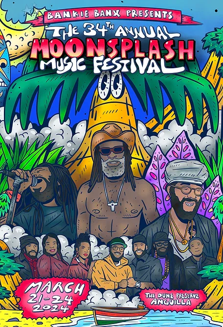

Celebrate Carrie’s Fiftieth Birthday on Anguilla!
A Message from the Birthday Girl:
Dearest people to me,
Thank you for being there for me all these years; all these years that don’t seem possible to be passing by so quickly. It’s now almost 2024, and some of us haven’t been together in over a year or more, even if it feels like yesterday - it wasn’t! You are so present in my heart and how I think about you so often for inspiration, laugh at our crazy times, and wonder how in the world we have made it this point given those crazy times! My biggest wish to celebrate walking around the sun for a half-century would be to spend some time together, connect with you more frequently and to tell you how important each of you are to me (ok that’s 3 wishes but..). So, whether the timing of this one celebration works for you or not given all the hectic schedules, let’s plan some time to celebrate:) For folks who have an opening in March, let’s get our Island on! Love you all and so looking forward to seeing each of you whenever possible.
Love, Carrie
A Message from the Host:
We are so happy to invite you to (Carrie’s version of) paradise to enjoy some sun, sand, surf, reggae, food, drinks, good people, …. Oh and a Birthday! We will get you down to paradise and have a place to rest (if you don’t just end up sleeping on the beach!), but we please need your HELP with the following:
HELP - Things You Have to Do
Carrie is providing the hotel, transportation and some fabulous meals and activities, but you still have to do a few things:
1. Block out the dates March 22-26.
2. IMPORTANT - To reserve a seat on the private jet you must tell Carrie your passport info and weight(!).
3. Arrange transportation to Teterboro Airport on March 22.
NOTE: We have switched the aircraft operator so the departure/return airport is now Teterboro in New Jersey.
- More to come on this - Terminal (“FBO”) and tail number (needed to enter FBO) to be announced. If there is a NYC crew maybe we will Sprinter over together?
4. Check back on this site for updates
This is party central.
Carrie will continue to put (or ask me to put) fun tidbits of the Anguilla excursions you can opt into, if you are able to get out of the gorgeous water!
NEW! Tentative Agenda
We are still working on the details, but here is a rough outline of what we are planning. The goal is to have fun together and offer time for individual activities. The Moonsplash music festival is just down the beach Friday night, Saturday night and Sunday afternoon but attendance is optional. More info below.
FRIDAY, MARCH 22
9:00am Arrive at Teterboro Airport
1:00pm Arrive at The Aurora
2:00pm Lite Bites at Coconuts
6:00pm Welcome Cocktails at Aurora Rendezvous Lobby Bar
7:00pm Beach BBQ Birthday Bash at the Sunshine Shack
10:00pm Moonsplash Nite 1
SATURDAY, MARCH 23
Morning Personal Playtime (see Activity Options!)
11:30am Brunch at Tasty’s
Afternoon Personal Playtime (see Activity Options!)
4:30pm TraditionSunset Sail
7:00pm Sandy Ground Bar Hop and Dinner
10:00pm Moonsplash Nite 2
SUNDAY, MARCH 24
Morning Personal Playtime (see Activity Options!)
10:00am Beach workout with Valentino
12:00pm Scillibration Lunch at Scilly Cay
3:00pm Sunday Funday on Shoal Bay East
6:00pm Dinner at Ben’s Pit Stop
10:00pm Moonsplash Nite 3
MONDAY, MARCH 25
Morning Personal Playtime (see Activity Options!)
12:00pm Moke trip to Nat’s Place for lunch (best Johnny Cakes anywhere)
3:30pm Sands and Salts for gifts
5:00pm Sunset Lounge at Four Seasons for cocktails and sunset.
7:00pm Dinner at Straw Hat
TUESDAY, MARCH 26
- 10:00am Depart hotel for airport. The Jet ain’t leaving without us.
Potential individual activities
On the Aurora Property: Golf, Waterpark, Sleep on beach, Greenhouse Tour, Painting party.
Education: Anguilla National Trust hike, Anguilla Animal Rescue (AARF), Anguilla Enhancement Project (AEP) volunteer project, Salt harvesting trip
Ocean adventures: Night kayaking, Diving, Snorkel trip.
Things to Get You Excited About Anguilla

Moonsplash 2024 Artists Lineup
March 22nd: Reggae Night welcomes the Grammy-nominated Protoje, captivating audiences with his signature blend of conscious lyrics and infectious rhythms.
March 23rd: Legends Night takes a step back in time with The Legendary Wailers, channeling the timeless spirit of Bob Marley and immersing everyone in the roots of reggae.
March 24th: Sunday’s Festival begins with a heart-pumping day-time Jimmy Buffett tribute concert that will have everyone singing along, and culminates with exciting performances by Mighty Mystic and The Moonsplash Allstars.